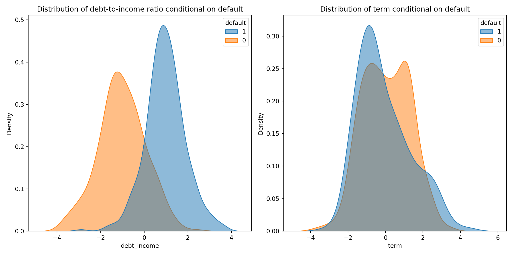

3. Classifiers
Big data in Economics
Juan D. Montoro-Pons | 2024/25
Classification problems
Classification problems: qualitative/categorical response
Classification techniques or classifiers
Concepts used in regression also apply: supervised learning, data partitioning, underfitting, overfitting, among others
-
Why not linear regression in classification problems?
- For binary problems \(X\hat{\beta}\) is an estimate of \(P(Y=1|X)\)
- Inability to produce meaningful estimates for \(P(Y|X)\) (are not forced to be inside the \([0,1]\) interval)
- Impossibility to adequately accomodate qualitative responses with more than two classes (response should have implicit ordering and even then the difference between levels of the variable is arbitrary)
Regression: the binary response case
GOAL: predict the probability of a customer defaulting on a loan.
- Outcome: Default (binary)
- Two predictors are used: Loan amount and term of loan (both are standardized).
Logistic regression
from sklearn.linear_model import LinearRegression
lm = LinearRegression()
lm.fit(X_train,y_train);
lm.intercept_, lm.coef_(0.5083285752419477, array([0.25246833, 0.00035319]))The central output of a linear regression is a predictor for the conditional mean:
\[\mu_i=0.5083285752419477 +0.25246833 \times \textrm{loan_amount} + 0.00035319 \times \textrm{term}\]
from sklearn.linear_model import LogisticRegression
logistic = LogisticRegression()
logistic.fit(X_train,y_train);
logistic.intercept_, logistic.coef_(array([-0.0391638]), array([[2.03475556, 0.10518903]]))The central output of a logistic regression is a linear predictor (we call it \(\nu_i\))
\[\nu_i=-0.0391638 +2.03475556 \times \textrm{loan_amount} + 0.10518903 \times \textrm{term}\] The linear predictor is transformed to generate predictions on the probability of default \(\mu_i\). The logit link is used:
\[\log\left(\frac{\mu_i}{1-\mu_i}\right) =-0.0391638 +2.03475556 \times \textrm{loan_amount} + 0.10518903 \times \textrm{term}\]
Solving for \(\mu_i\) we get predicted probabilities for given \(x_i\) values:
\[\mu_i=\frac{\exp\left(-0.0391638 +2.03475556 \times \textrm{loan_amount} + 0.10518903 \times \textrm{term}\right)}{1+\exp\left(-0.0391638 +2.03475556 \times \textrm{loan_amount} + 0.10518903 \times \textrm{term}\right)}\]
Generalised linear models (GLMs)
Components of a GLM
A stochastic component that specifies the probability distribution of the reponse variable (EDM family. e.g., normal, binomial, poisson)
A systematic component or linear predictor: \[\nu_i = \beta_1 + \beta_2 x_{2i} +\ldots + \beta_p x_{pi}\]
Link function, that is, a functional form that connects the mean of the response with the systematic component (the linear predictor): \[g(\mu_i)=\nu_i \]
Because GLMs assume a specific probability distribution for the responses from the EDM family, (numerical) maximum likelihood estimation procedures can be used for parameter estimation: \(-l(\beta|x,y)\) is the loss function to be minimized
The linear model
Gaussian distribution for the response \(y_i\): \[y_i \sim N(\mu_i, \sigma^2)\]
Linear predictor: \[\nu_i = \beta_1 + \beta_2 x_{2i} + \ldots + \beta_p x_{pi}\]
Identity link function: \(\nu_i=\mu_i\)
The linear model estimates the conditional mean of the response variable based on the linear predictor.
\[E[y|X]=\beta_1 + \beta_2 x_{2i} + \ldots + \beta_p x_{pi}\]
Binary responses: the logistic model
Let a binary outcome \(y \in \{0,1\}\) and \(x_1,x_2\ldots x_p\) features. In this case
The stochastic component (Bernouilli distribution): \[P(y_i;\mu_i) =\mu_i ^{y}(1-\mu_i )^{(1-y_i)}\]
The linear predictor: \[\nu_i = \beta_1 + \beta_2 x_{2i} +\ldots +\beta_p x_{pi}\]
The link function: \[\nu_i=g(\mu_i)=log\left(\frac{\mu_i}{1-\mu_i}\right)\]
Combining these elements the logit model predicts the conditional mean of the response as:
\[P(y_i=1|X)=\mu_i=\frac{\exp{X\beta}}{1+\exp{X\beta}}\]
Multiclass regression: the multinomial logistic model
If the response \(y\) has \(k>2\) classes we use a multinomial model, also a GLM. Its components:
Stochastic component: response follows a multinomial model, i.e., it can take on one of \(k\) categories. The probability there are \(y_1,y_2\ldots y_k\) outcomes in each category \(i=\ldots k\) of the response \(y\) in \(n\) trials is given by \[ P(y_1, y_2, \ldots, y_k) = \frac{n!}{y_1! y_2! \cdots y_k!} p_1^{y_1} p_2^{y_2} \cdots p_k^{y_k} \]
One linear predictor for each \(j\)-th category (where \(j = 1, 2, \ldots, k-1\)): is \[ \nu_j = \beta_{0j} + \beta_{1j} x_1 + \beta_{2j} x_2 + \cdots + \beta_{pj} x_p \]
A logit link function. For the \(j\)-th category is: \[ \log \left(\frac{P(Y = j)}{P(Y = k)}\right) = \nu_j \] where \(P(Y = j)\) is the probability of the \(j\)-th category, and \(P(Y = k)\) is the probability of the reference category (can be chosen arbitrarily).
Multinomial logistic regression
The conditional mean is given by:
\[P(y=m|X)=\frac{\exp{(X\beta_m)}}{\sum_j \exp{(X\beta_j)}}\]
Conceptually this would be like estimating \(m-1\) binary logit models.
To ensure identificability the coefficients of one category are fixed. I.e. one sets \(\beta=0\) for a given baseline or reference category.
The choice of baseline is arbitrary (although some might favor the most frequent class or make the choice based on theoretical considerations)
To train a multinomial model in
PythonuseLogisticRegression(multi_class='multinomial')
Other GLMs
Count data can be modeled using the Poisson (mean equals variance) and Negative binomial (overdispersion) specifications. In the former:
Stochastic component: response follows a Poisson model, \[ P(y_i|\lambda) = \frac{\exp({-\lambda})\, \lambda^{y_i}}{y_i!} \]
The linear predictor is: \[ \nu_j = \beta_{0} + \beta_{1} x_1 + \beta_{2} x_2 + \cdots + \beta_{p} x_p \]
A logarithmic link function that ensures that counts will always be non-negative \[ \log (\lambda) = X \beta \] Note that the latter implies
\[E[y|X]=\lambda=\exp({X\beta})\]
Other GLMs include non-negative responses or survival times
Regularized GLMs
Regularized GLMs
Regularization is used to avoid overfitting when training GLMs for predictive purposes
We use the same approach as with the linear model: a penalty terms is introduced in the loss function to that penalizes the magnitude of the estimated coefficients
There is a tuning parameter \(\lambda\) that controls for the amount of regularization.
The optimal value for \(\lambda\) is chosen using resampling (cross-validation)
The loss function of a regularized GLM includes a regularizer \(R\): \[-l(\beta|x,y)+\lambda R(\beta)\]
Penalized parametric regression models
As in the case of the linear model, the penalty can be \(L_1\) or \(L_2\) or a combination of the two:
- LASSO: \[R(\beta)=||\beta||_1=\sum_j|\beta_j|\]
- Ridge: \[R(\beta)=||\beta||_2=\sum_j\beta_j^2\]
- Elastic net: \[R(\beta)=\alpha ||\beta||_1+ \frac{1}{2}(1-\alpha)||\beta||_2\]
Penalized parametric regression models
Generative classification models
Definition
Logistic regression models directly the conditional mean of the response \(P(y=1|X)\)
Generative models involve modeling the distribution of the predictors separately for each one of the classes (that is, for each value of the response \(y\)), that is \(P(X|y)\)
-
Then, Bayes theorem is applied to retrieve the conditional probability \(P(y|X)\), that is
\[P(y=k|X)=\frac{\pi_k P(X|y=k)}{\sum_j \pi_j P(X|y=k)}=\frac{\pi_k f_k(X)}{\sum_j \pi_j f_j(X)}\]
A unit is assigned to the class \(k\) for which the posterior probability \(P(y=k|X)\) is maximum
-
Why generative models?
- In certain circumstances (separation between classes is substantial, i.e. lack of overlap) logistic regression parameters are unstable
- Accuracy gains when predictors are approximately normal and with small sample sizes
- Naturally extend to more than two classes
Naive Bayes
The trick to estimate generative models is how to tackle the estimation of \(f_k(\cdot)\). In the case of the Naive Bayes classifier a simplifying assumption is made: within the \(k\)th class the \(p\) predictors are independent. Then
\[f_k(X)=f_{k1}(x_1) \times f_{k2}(x_2) \times \ldots f_{kp}(x_p)\] Implications
The problem of estimating a \(p\)-dimensional joint distribution is simplified to that of estimating marginal distributions (removing the need to estimate the joint distribution between the different predictors)
Though independence is hardly to sustain, Naive Bayes produces rather reasonable results
Naive Bayes: decision boundary
Linear discriminant analysis
Goal: find linear combinations of features that best separate different classes of data.
Assumption: predictors \(X\) are drawn from a multivariate Gaussian with class specific mean vector and common covariance matrix \(N(\mu_k,\Sigma)\) (categorical variables that are to be treated as predictors are tough to accommodate).
Using the mean and covariance of each class determines the optimal linear combination of features that maximizes the separation between classes while minimizing the overlap within each class.
LDA creates linear decision boundaries (lines or hyperplanes) to classify new data points based on their projected positions in the lower-dimensional space.
LDA: decision boundary
Quadratic discriminant analysis
In QDA observations from each class are drawn from a Gaussian distribution BUT each class has its own covariance matrix, i.e. \(N(\mu_k,\Sigma_k)\)
Once mean and covariance of each class are estimated QDA determines the optimal quadratic combination of features that maximizes the separation between classes while minimizing the overlap within each class (hence decision boundaries are no longer linear)
QDA requires estimating separate covariance matrix to each class: more flexibility hence more prone to overfitting.
In general, the larger the training dataset, the more allowance there is for flexible approaches (hence other things equal QDA’s requires larger training dataset)
QDA: decision boundary
Predictive performance of classifiers
Some general considerations
All metrics of accuracy after training a classifier can be applied to both the training sample and the test sample.
Training sample metrics are generally expected to be better than those of the test sample: a model is likely to perform better on data it has seen before.
Good training sample performance metrics and poor test sample performance metrics are indicative of overfitting: the model “learns” the training data, including its noise and outliers, which negatively impacts its performance on new, unseen data (the test sample).
The null classifier
A null classifier is a simple baseline model used in classification tasks that doesn’t use any features to make predictions but resorts to the distribution of the target variable in the training data.
Most common types of null classifiers:
Majority class (also most frequent class) classifier: always predict the majority class from the training data.
Random (or stratified) classifier: predict with probability based on the class distribution in the training data.
The null classifier serves as a baseline to compare the performance of more complex models. If a model performs worse than the null classifier, it indicates that the model is not effectively capturing the patterns in the data.

Classification errors
A binary classifier can make two types of errors:
- Type I error or false positive (FP): predict a positive outcome (1) for an instance that actually belongs to the negative class (0)
- Type II error or false negative (FN): predict a negative outcome (0) for an instance that actually belongs to the positive class (1)
These errors can be summarized in a confusion matrix
Confusion matrix
| Predicted Negative (0) | Predicted Positive (1) | |
|---|---|---|
| Actual Negative (0) | True Negative (TN) | False Positive (FP) |
| Actual Positive (1) | False Negative (FN) | True Positive (TP) |
Confusion matrix & metrics (training sample)
precision recall f1-score support
0 0.863049 0.837093 0.849873 399
1 0.842615 0.867830 0.855037 401
accuracy 0.852500 800
macro avg 0.852832 0.852462 0.852455 800
weighted avg 0.852807 0.852500 0.852461 800Confusion matrix & metrics (test sample)
precision recall f1-score support
0 0.891304 0.820000 0.854167 100
1 0.833333 0.900000 0.865385 100
accuracy 0.860000 200
macro avg 0.862319 0.860000 0.859776 200
weighted avg 0.862319 0.860000 0.859776 200Precision and accuracy-related metrics
| Metric | Formula | Description |
|---|---|---|
| Prevalence | \[\frac{TP + FN}{TP + TN + FP + FN}\] | Proportion of true positive instances among all instances. |
| Detection Rate | \[\frac{TP}{TP + TN + FP + FN}\] | Proportion of true positive instances among all instances. |
| Accuracy | \[\frac{TP + TN}{TP + TN + FP + FN}\] | Proportion of correctly classified instances among all instances. |
| Precision | \[\frac{TP}{TP + FP}\] | Proportion of true positive instances among all instances predicted as positive. |
| Sensitivity (Recall, TPR) | \[\frac{TP}{TP + FN}\] | Proportion of true positive instances among all positive instances. |
| Specificity | \[\frac{TN}{TN + FP}\] | Proportion of true negative instances among all negative instances. |
| False Positive Rate (FPR) | \[1-\textrm{Specificity}=\frac{FP}{TN + FP}\] | Proportion of false positive instances among all negative instances. |
| F1 Score | \[2 \cdot \frac{\text{Precision} \cdot \text{Recall}}{\text{Precision} + \text{Recall}}\] | Harmonic mean of precision and recall. |
| Error Rate | \[\frac{FP + FN}{TP + TN + FP + FN}\] | Proportion of incorrectly classified instances among all instances. |
| NIR | Proportion of the most frequent class | Non-information rate: proportion of the largest class in the dataset. |
ROC curve
A Receiver Operating Characteristic (ROC) curve is a graphical plot that illustrates the performance of a binary classifier system as its discrimination threshold is varied. The ROC curve is created by plotting the true positive rate (TPR) against the false positive rate (FPR) at various threshold settings
-
Characteristics:
- True Positive Rate (TPR, also sensitivity or recall): proportion of actual positives correctly identified by the classifier.
- False Positive Rate (FPR or 1-specificity): proportion of actual negatives incorrectly identified as positives by the classifier.
- Diagonal Line: represents a random classifier with no discrimination ability (i.e., a 50-50 chance).
- Area Under the Curve (AUC): The area under the ROC curve (AUC) quantifies the overall ability of the classifier to discriminate between positive and negative classes. An AUC of 1 indicates a perfect classifier, while an AUC of 0.5 indicates a classifier with no discrimination ability (diagonal line).
The ROC (Receiver Operating Characteristic) Curve plots the True Positive Rate (Recall) against the False Positive Rate (1 - Specificity) for different threshold values. The area under the ROC curve (AUC) is a measure of the model’s ability to distinguish between the positive and negative classes.
ROC curve (training sample)
ROC curve (training sample)
ROC curve (test sample)
ROC curve (test sample)
Uses of the ROC curve
-
Model comparison: ROC curves and AUC are used to compare the performance of different classifiers. The latter provides a metric of the overall performance of a binary classification model by quantifying the ability of the model to distinguish between positive and negative classes. The AUC value ranges from 0 to 1, where:
- AUC = 1: Perfect classifier
- AUC = 0.5: Classifier with no discriminative power (equivalent to random guessing)
- AUC < 0.5: Classifier performing worse than random guessing
-
Threshold selection: ROC curves help in selecting the optimal threshold for classification by balancing the trade-off between TPR and FPR.
- Choosing the threshold of the curve closest (euclidean distance) to the top-left corner of the plot - Assessing the costs associated with false positives and false negatives. By assigning different costs to these errors, the threshold that minimizes the overall cost can be determined
AUC represents the probability that a randomly chosen positive instance is ranked higher than a randomly chosen negative instance
Imbalanced datasets
precision recall f1-score support
0 0.926540 0.984887 0.954823 397
1 0.647059 0.261905 0.372881 42
accuracy 0.915718 439
macro avg 0.786800 0.623396 0.663852 439
weighted avg 0.899802 0.915718 0.899147 439Precision-Recall Curve
Precision-Recall is a useful measure of success of prediction when the classes are very imbalanced. In information retrieval, precision is a measure of the fraction of relevant items among actually returned items while recall is a measure of the fraction of items that were returned among all items that should have been returned.
- Precision (Positive Predictive Value): ratio of true positive predictions to the total number of positive predictions (both true positives and false positives). It answers the question: “Of all the instances predicted as positive, how many are actually positive?”
\[\text{Precision} = \frac{\text{True Positives}}{\text{True Positives} + \text{False Positives}}\]
- Recall (Sensitivity or True Positive Rate): ratio of true positive predictions to the total number of actual positives (true positives and false negatives). It answers the question: “Of all the actual positive instances, how many were correctly predicted as positive?”
\[\text{Recall} = \frac{\text{True Positives}}{\text{True Positives} + \text{False Negatives}}\]
A Precision-Recall Curve plots precision (y-axis) against recall (x-axis) for different threshold values. It helps visualize the trade-off between precision and recall for different thresholds.
Precision-Recall Curve
Average precision
The area under the curve is approximated through the average precision (\(AP\)), which summarizes the precision-recall plot as the weighted mean of precisions achieved at each threshold, with the increase in recall from the previous threshold used as the weight: \[\text{AP} = \sum_n (R_n - R_{n-1}) P_n\]